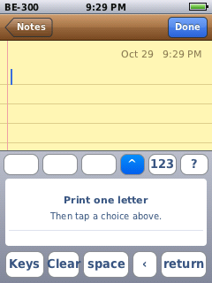
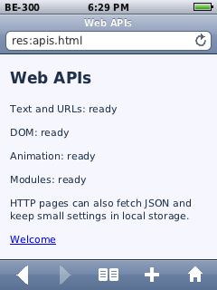
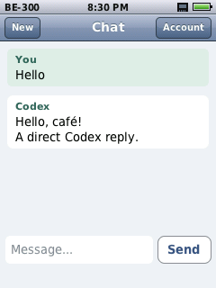
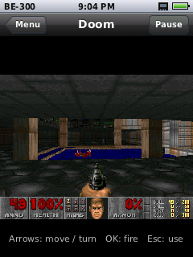
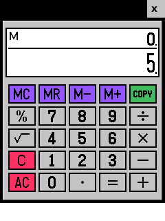

A new operating system for an old Casio PDA
Glaze is a microkernel OS written from scratch for the Casio Cassiopeia BE-300, with a touch interface in the style of the first iPhone. It runs on real hardware from CompactFlash through GlazeBoot, and in the BE-300 emulator.
GlazeBoot starts Glaze from a CF card without flashing the device. Or try it on linux4be.com: tap or press a key to enable emulator sound.
Tested on a real Cassiopeia BE-300 · October 25, 2026


New in Glaze
Updated . These features are in current source. The October 25 download predates this update; build current source for the newer features. The hosted emulator may also run an older image.
- Handwriting input
- Tap Write on the keyboard to print one letter or digit at a time, then tap a candidate to insert it. Recognition runs entirely on the device, with a shape guide and Settings practice pad. Switch back to keys whenever you like. Handwriting guide.
- Browser Web APIs
- JerryScript JavaScript, frames and iframes now have asynchronous
fetchfor GET/POST, URL and UTF-8 tools, origin-scoped local/session storage, more DOM and event APIs, animation callbacks and ES modules. Designed for small web apps within the BE-300's memory; many modern sites still require unsupported APIs. Supported Web APIs and limits. - Launch apps from NAND
- After a USB or GlazeBoot RAM boot, open Files → NAND → ProgramFiles and select a supported original
.exeor.exe.cpk. Glaze recovers matching runtime metadata from your device and keeps the source NAND read-only. Compatibility and setup. - Chat and Doom
- A native text chat app with ChatGPT account sign-in for Codex, and a single-player Doom port with physical buttons, sound effects and saved games. Explore the app catalog.
- USB networking
- A macOS or Linux host helper gives Glaze an IPv4 link over the existing USB connection, without a CF network card. Host forwarding and NAT can provide internet access. Networking and connection options.
- Screen mirroring
- View and control Glaze from a computer's VNC viewer through USB or a paired TLS network connection. The same transports support file transfer, app installation, logs and debugging. Mirror and develop remotely.
- Drivers on demand
- Network drivers are loadable MIPS modules. With no network card or active USB network link, Glaze leaves the network drivers and service unloaded. Inserting supported hardware starts the needed driver and service; removing it releases resources. Driver and service lifecycle.
- Native app SDK
- A relocatable C SDK includes headers, shared libraries, a project generator, package validation, resource tools and examples. Build apps outside the OS checkout, then install and debug them over USB or the network. Get started with the SDK.
For developers: rendering and flash benchmarks, task monitoring, and boot, launch and memory measurements with tests/bench.py.
Apps and games
Built in: Calendar, Photos, Clock, Calculator, Files, Browser, Music, Videos, App Store, Notes and Settings. Additional native apps install as .gzp packages from Files or the App Store. The catalog below describes current source packages; store availability and the OS version each app needs can differ. Package sources and build targets.
- Chat
- Text conversations using Codex access associated with your ChatGPT account. Approve a device code on another device, or import a one-time official Codex CLI browser login. No API key or continuously running relay is needed. Account eligibility and Codex usage limits apply; free access is not guaranteed, and ChatGPT website conversations do not sync. Sign-in and installation.
- Doom
- A DoomGeneric port with single-player gameplay, physical button controls, sound effects, automap and save/load. Supply your own compatible Doom WAD; no game data is bundled. Supported WADs and controls.
- Console emulators
- NES, including supported NES 2.0 images; Game Boy and Game Boy Color; Sega Master System and Genesis / Mega Drive; Game Gear; and TurboGrafx-16 / PC Engine. Use the BE-300's physical buttons, with no on-screen gameplay controller. Bring your own compatible ROMs; mapper support and performance vary by system and game.
- Gmail
- IMAP mail and SMTP sending over TLS, using a Gmail App Password or a custom mail server. Mail app source.
- AIM
- Messages, buddy lists, online/away status, typing notices, profiles and classic sounds. Connect to a revival or self-hosted OSCAR server; AOL's original service is closed. The session ends when you leave the app. AIM app source.
- SomaFM
- An unofficial internet radio player with 51 stations, favorites and track metadata. Playback continues after Home while you use other apps. Requires an internet connection through a supported network card or a forwarded USB network link. Radio guide.
- Task Manager
- Live CPU and memory history, running tasks and threads, plus controls to end other managed apps with confirmation. System services stay protected. Task monitoring.
- More to try
- Minesweeper, Klondike Solitaire, the Fifteen sliding puzzle, Sketch for drawing, and Hello, a small example app for developers.
Connect, mirror and debug
The glaze-usb host tools connect a macOS or Linux computer to Glaze. New USB networking and mirroring paths have emulator and protocol test coverage; physical-device interoperability still needs validation.
- USB network link
- Run
sudo glaze-usb usb-netto create a macOS utun or Linux TAP interface. This uses Glaze's USB protocol and requires the host helper. The direct link works without a network card; internet access additionally requires host forwarding and NAT configuration. Host setup. - VNC screen mirror
- Run
glaze-usb mirror, then connect your computer's VNC viewer, including macOS Screen Sharing, to the localhost bridge. See Glaze's 240×320 screen and send mouse/stylus and keyboard input, or choose view-only mode. Works over USB or paired network transport; audio and clipboard are not mirrored. Mirroring guide. - Network debugging
- The USB development command set also works over paired TLS: transfer files, install and run packages, capture screenshots, send input, read logs and reload or reboot. Network debugging is off by default and requires a pairing key. Pairing and commands.
Tested on a real BE-300
These results come from a physical device, serial captures and listening tests. The gallery below shows emulator screenshots.
- Boot and storage
- GlazeBoot reaches SpringBoard with touch, buttons and apps. The boot CF card mounts as /Card; the original Windows CE NAND volume mounts read-only as /NAND. Cards inserted after boot are detected.
- Ethernet
- An AmbiCom AMB8610 NE2000 card obtains DHCP and loads HTTPS pages and App Store downloads. SomaFM streams through the same network stack.
- XI-825 Wi-Fi
- A Z-Com XI-825 with station firmware 1.3.5 scans and joins an open network, obtains DHCP and loads network content. WEP support is implemented and emulator-tested; secured-network interoperability on physical cards still needs validation.
- WL54-CF Wi-Fi
- A native driver supports Marvell CF8385 cards, with open, WEP, WPA and WPA2 Personal paths tested in the emulator. Physical-card bring-up is in progress. The hardware ZIP includes unmodified Linux CF8385 firmware under its Marvell license. Interoperability of this firmware pair on physical cards still needs validation.
- Headphones and volume
- Settings tones and music play through the headphone jack. Changing the volume while music plays is confirmed working. The device's internal piezo buzzer uses a separate controller and is outside this PCM audio driver.
Download GlazeBoot and Glaze
This is the October 25 release. Newer features described above, including handwriting, Chat, Doom, USB networking, mirroring, the SDK, expanded Web APIs and direct NAND app launching, require a build from current source. This ZIP has not been rebuilt for the October 29 update.
October 25, 2026 · build e4500c1
Ready for your CompactFlash card
The ZIP includes GlazeBoot.exe, the matching kernel and system archive with all built-in apps, WL54-CF firmware for physical Marvell chips, boot settings, setup instructions, licenses, and a firmware-free Glaze NAND image for the emulator.
Source for this build · Release details · Marvell firmware license and provenance included. No original Windows CE apps are bundled.
Extract the ZIP. Copy its
Glazefolder to a FAT-formatted CompactFlash card. The included README explains setup and the optional per-card Wi-Fi seed.On the BE-300 in Windows CE, open
\Storage Card\Glaze\GlazeBoot.exeand choose Boot. The included configuration keeps Windows CE's NAND volume read-only.Glaze runs from RAM: files and settings in its root filesystem disappear on reset. Keep files you want on
/Card. To return to Windows CE, fully power-cycle the device; the README describes the reset procedure.
All built-in apps are included: Calendar, Photos, Clock, Calculator, Files, Browser, Music, Videos, App Store, Notes and Settings. Install additional apps from the App Store. The WL54-CF firmware is licensed only for use with physical Marvell chips; firmware and build instructions. Full GlazeBoot guide.
On the screen
Every picture here is a screenshot of Glaze running in the BE-300 emulator, shown pixel for pixel at the device's 240 by 320.

HandwritingPrint a letter, choose a candidate, or switch back to keys. 
Browser Web APIsThe bundled offline demo exercises URLs, DOM, animation and ES modules. 
Chat · test conversationThe native chat interface, using a local protocol fixture for this capture. 
DoomSingle-player gameplay with physical buttons. Supply your own WAD. 
NotesSaved as you type in Glaze's filesystem. 
PhotosA camera roll with cached thumbnails. 
MusicMP3 and WAV, decoded on the device. 
BrowserIts own HTML and CSS engine, HTTPS, JavaScript and frames. 
CalendarMonth view with reminders. 
App StoreFree apps that install over the network. 
Task ManagerLive CPU, memory and running tasks. 
AIMA real conversation with a test OSCAR server. 
MinesweeperFrom the App Store. Hold a square to flag it. 
SolitaireFrom the App Store. Drag cards or tap to move them. 
ClockWorld clock, stopwatch and timer.
Original BE-300 apps, in Glaze
The original MIPS application code runs in an ordinary Glaze process through a userspace WinCE compatibility runtime. With current source, a USB or GlazeBoot RAM boot can launch supported apps straight from your own device's NAND: Files → NAND → ProgramFiles → an .exe or .exe.cpk. Original NAND files stay read-only; changes go into private Glaze app contexts. Direct NAND launch guide.
The first launch recovers matching runtime metadata and needs several megabytes of free memory; close large apps first. Selected apps can also be imported as packages from your own local BeShell NAND image. Vendor software is not bundled or offered in the App Store. New direct launches are emulator-tested; this does not establish compatibility with arbitrary Windows CE software.

Casio Calculator · from NANDLaunched through Files after a RAM boot; 2 + 3 = 5. 
PocketNotepadEdit and save documents with Glaze's keyboard. 
PalmTweakOriginal property pages, controls and saved preferences.
- Calculator & Notepad
- Calculator uses its original LC.dll engine. PocketNotepad supports basic editing, opening and saving documents. Search, Font and About dialogs remain unvalidated.
- Owner & OwnerInfo
- Identification and Notes tabs, text fields and checkboxes save through the original toolbar and restore on the next boot. Startup-display settings stay private to each app.
- Clock · opt-in
- The initial Home and Visiting digital displays run with UTC defaults. City selection, alarms and system clock or time-zone changes are not supported.
- RegEdit · opt-in
- Browse, create and edit keys and string values through the original dialogs, with saved settings across boots. It edits its own private registry. File import and export remain unvalidated.
- PalmTweak · opt-in
- General and Power Off pages support checkboxes, numeric spinners, validation, Apply, OK and Cancel. Saved animation and timeout preferences stay in its private registry; they do not change Glaze's animation or power policy. Other pages remain unvalidated.
This is support for selected apps, with limited controls and APIs. Selected WorldTALK network workflows are supported; multimedia and arbitrary vendor DLLs remain limited. App data and preferences follow Glaze's storage: a RAM boot loses root-filesystem changes on reset, so copy documents you want to keep to a card. Import instructions, supported features and compatibility limits.
What's inside
- Kernel
- A small microkernel with synchronous message passing, shared memory, threads and paged virtual memory.
- Multitasking
- Apps share libraries through a dynamic linker. Return to apps through the multitasking bar; background apps can retain their state while threads and drawing are suspended. Radio playback remains with the audio service.
- Storage
- NAND boots use littlefs on a flash translation layer with error correction and bad-block handling. USB and GlazeBoot RAM boots keep the original Windows CE NAND volume available read-only at /NAND. CompactFlash cards appear as /Card.
- Text input
- Use the on-screen keyboard or offline handwriting pad in apps using Glaze's shared text controls. A Stowaway folding keyboard detected at boot supplies US ASCII physical text input and hides the on-screen panel; live attachment is not supported.
- Network
- lwIP over NE2000 Ethernet, XI-825 Wi-Fi, WL54-CF Wi-Fi or the USB host link: DHCP, DNS, TCP and UDP. Settings scans and saves Wi-Fi connections; security depends on the card. See the hardware status above. The clock sets itself by NTP.
- Web
- A browser engine of its own, with HTTPS through wolfSSL and bounded JavaScript through JerryScript. Small pages and web apps fit its scope; it is not a full modern desktop browser.
- Display and touch
- Original LCD initialization, five-point touch calibration, physical backlight and LCD contrast controls, and a configurable timeout that returns to the lock screen on wake. Display guide.
- Memory and UI
- On NAND boots, built-in apps and assets are demand-paged from flash, with shared read-only pages and reclaimable cache. GlazeBoot instead keeps the system archive in RAM. Consistent scrolling, tap feedback and smaller redraws help keep the touch interface responsive.
- Sound
- MP3, WAV, internet radio and system sounds through headphone PCM output, with a shared volume control. The separate internal piezo buzzer is not driven by this audio path.
The hardware
- Device
- Casio Cassiopeia BE-300
- Processor
- NEC VR4131 (MIPS)
- Screen
- 240 by 320, 16-bit colour, touch
- Memory
- 16 MB
- Flash
- 16 MB NAND
Develop native apps
The standalone C SDK builds installable Glaze apps outside the OS checkout. It includes headers, shared libraries, startup objects, a project generator, package checks, resource tools, an example and USB client source. The MIPS cross-compiler, emulator and OS images are separate dependencies.
Export the SDK with the repository's Docker toolchain.
./build.sh sdk-archive # Extract out/sdk/glaze-sdk.tar.gz where you want to work.With the MIPS cross-compiler installed, create and check an app.
export GLAZE_SDK="$PWD/glaze-sdk" "$GLAZE_SDK/bin/glaze-sdk" doctor "$GLAZE_SDK/bin/glaze-sdk" new my-app --id my-app --name "My App" make -C my-app make -C my-app checkInstall the generated
my-app/build/app.gzpthrough Files, or transfer and run it withglaze-usb. Mirror the screen while developing, then inspect logs and capture screenshots over USB or paired network transport.
Use an SDK and OS image from the same source revision; the app ABI is not yet stable across releases. Linux is the reference build host; macOS can use the Docker toolchain. Full SDK setup, APIs, packaging and host instructions. USB development commands.
Build it yourself
Glaze runs in the be300 emulator, which also provides the MIPS cross-compiler as a Docker image.
Build the emulator and the cross-compiler image.
git clone https://github.com/jroark/be300 cd be300 cmake -S . -B build-host && cmake --build build-host docker compose build mips-devBuild Glaze. The result is a 16 MB NAND image,
out/glaze.bin.git clone https://github.com/jroark/glaze-os cd glaze-os ./build.shBoot it, with the emulated Ethernet card for networking.
../be300/build-host/be300 --nand out/glaze.bin --rtc-host-time --ne2000